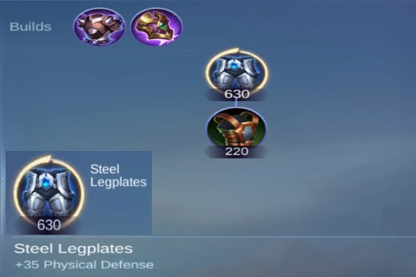

Alto Risco, Alta Recompensa: Atiradores são frequentemente vulneráveis no inÍcio, mas se tornam imparáveis causadores de dano no final do jogo.
Isolamento da Rota: Espere estar sozinho, com suporte limitado. Isso torna suas decisões crÍticas.
Crescimento: Seu poder surge conforme você coleta itens principais. Sua eficácia aumenta significativamente após atingir esses marcos de itens chave.
2. Escolhendo o Atirador Certo
Selecionar o atirador certo para a situação pode afetar drasticamente seu desempenho na Rota de Ouro. Atiradores têm diferentes pontos fortes dependendo de seu kit e necessidades de itens. Aqui estão algumas categorias a considerar:
Atiradores Dominantes no InÍcio do Jogo
Atiradores como Bruno e Kimmy se destacam no inÍcio do jogo. Suas habilidades permitem que provoquem os inimigos e dominem seus oponentes de rota, facilitando a pressão sobre o Rota de Ouro inimigo e potencialmente garantindo torres cedo.
Vantagens: Forte poke e controle da rota.
Desvantagens: Muitas vezes perdem força no final do jogo em comparação com outros atiradores de crescimento.
Atiradores fortes no Early Game: Bruno, Clint, Karrie, Kimmy, Beatrix, Brody, Melissa, Moskov, Wanwan.
Atiradores de Crescimento no Final do Jogo
Heróis como Claude e Karrie são mais fracos no inÍcio, mas se tornam imparáveis no final do jogo. Esses atiradores dependem fortemente de farmar e construir seus itens principais antes de contribuÍrem significativamente para as lutas de equipe.
Vantagens: Alto dano e potencial de luta em equipe no final do jogo.
Desvantagens: Vulneráveis no inÍcio; exigem mecânicas fortes para sobreviver à pressão na rota.
Último Golpe: Sempre tente dar o último golpe nos minions para ganhar ouro. Perder ouro dos minions pode atrasar seus picos de itens.
Minimize as Mortes: Morrer no inÍcio do jogo pode atrasá-lo significativamente, então jogue com cautela, especialmente entre o primeiro e o segundo minuto, quando os caçadores inimigos completam suas rotações e provavelmente emboscarão sua rota.
Jogue de Forma Segura Contra Agressão: Se você estiver enfrentando um atirador forte no inÍcio, não tenha medo de jogar de forma passiva. Foque em farmar sob sua torre, se necessário, e espere uma oportunidade para sua equipe ajudar.
Ao sobreviver ao inÍcio do jogo sem entregar mortes ou ficar muito atrás, você se prepara para o sucesso no meio e final do jogo.
4. Congelando a Rota: Explicação do Mid e Torre Congelada
Use Quando: Você está empatado ou atrás no confronto e quer evitar emboscadas enquanto prepara sua equipe para uma emboscada no inimigo.
Execução: Limpe os dois minions pequenos e segure o minion canhão em frente à sua torre.
Saber quando e como congelar uma rota pode impedir seu oponente de farmar livremente, permitindo que você domine sua rota com a ajuda do seu caçador ou suporte.
5. Pressionando com Segurança: Quando e Como Pressionar a Torre
Consciência do Mapa: Mantenha sempre os olhos no minimapa. Se os inimigos estiverem desaparecidos, presuma que estão vindo para você.
Verificação de Moitas: Use habilidades ou ataques automáticos para verificar moitas suspeitas antes de se mover para elas.
Reforço: Se você perceber que inimigos estão desaparecidos, peça ajuda ou reforço à sua equipe. Mensagens rápidas como "Preciso de Ajuda" podem salvar sua vida.
Mantenha-se Atrás: Nunca inicie primeiro. Sempre deixe seu tanque iniciar e criar espaço para você.
Isole Ameaças: Posicione-se de forma que você esteja ao alcance de apenas um ou dois inimigos, maximizando seu dano enquanto minimiza sua exposição a habilidades de controle coletivo (CC).
Aguarde o CC: Deixe o inimigo usar suas principais habilidades de controle de grupo na sua linha de frente antes de avançar para limpar.
Um bom posicionamento pode permitir que você cause dano massivo sem ser eliminado, levando sua equipe à vitória.
Coxotes de Aço: Uma ótima compra no inÍcio do jogo se o Rota de Ouro e o caçador inimigos causam dano fÍsico.

Build Coxotes de Aço, Mobile Legends: Bang Bang
Itens Principais: Sempre tente completar seus itens principais antes de rotacionar ou se envolver em lutas intensas. Esses itens são geralmente de dano, como Espada Caçadora de Demônios, Lâmina do Desespero ou Confronto Final, dependendo do seu herói.
Ajuste sua build de itens de acordo com a situação e sempre considere comprar itens defensivos como Imortalidade se você estiver sendo frequentemente alvo dos inimigos.
Você gostou do nosso Guia da Rota de Ouro? Há algo que não entendeu ou gostaria de sugerir mudanças? Convidamos você a se juntar à nossa sessão de comentários na página do Alexandre Games Blog. Não hesite em expressar sua opinião, clarificar suas dúvidas e compartilhar sua sugestões. Clique no botão abaixo para começar:

 Guia de Dyrroth MLBB
Guia de Dyrroth MLBB